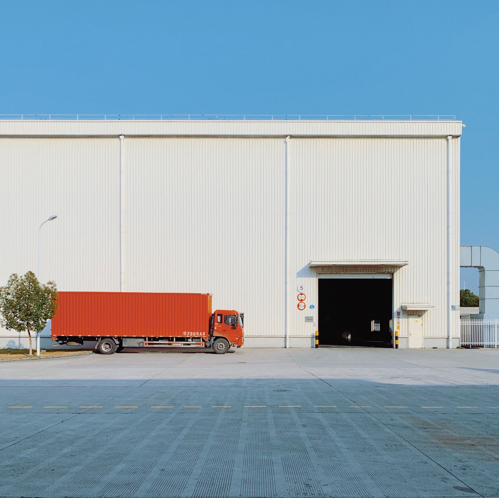
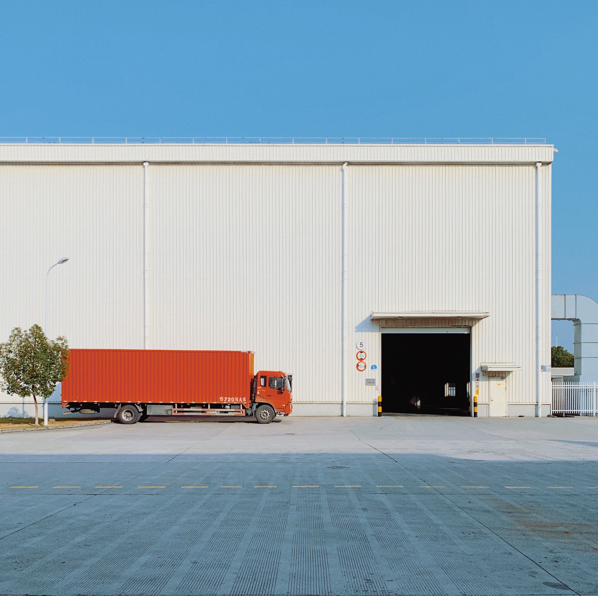

Our Mission
With so many ways to make this world a better place, we decided to deal with our own region. Every year we hear news of people's life getting worse because the hurricanes, flooding, red tide. We would like to change this. As we progress, it is our responsibility to help others who have fallen behind. We would like you to join in our mission to give back to the world.
 

We have helped around 3000 families in Florida, Alabama, and Georgia; however, there are so many families who still need help. With so much more needed to contribute, we will keep working to help the present and the onces in the future. Just recently we have added another goal we need to accomplish. We have to decided to open facilities throughout Florida, Georgia and Alabama to take care of the homeless people and kicked out tenants. We understand how hard it can be for you and your family in these conditions. This is why we are here to take care of you to the best of our ability. Here are our new facilties:
- 3921 Kenwood Place, Orlando, FL 32801
- 3594 Travis Street, Orlando, FL 33131
- 96 Kuhl Avenue, Atlanta, GA 30329
- 715 Limer Street, Columbus, GA 31901
- 3078 Joyce Street, Gulf Shores, AL 36542
Covid Pandemic
During this COVID-19 Pandemic, it is our responsibility to keep all of you safe. Since, the government is easing the restrictions on flights, we are still committed to keeping you safe. We have many different precautions in place: we make every passengar use hand sanitizer before boarding, we fully clean the airplanes every hour, and we also provide masks for passengars who forgot one. We also follow all the CDD guidelines. We understand you might have other questions for us, that's why have included a contact us form just down below. Please feel free to contact our dilligent working members through that form or you can also call us at : (202)-555-0135 from 8:00 AM to 5:00 PM ET.
{% include "jinja/messageForm.jinja" %}